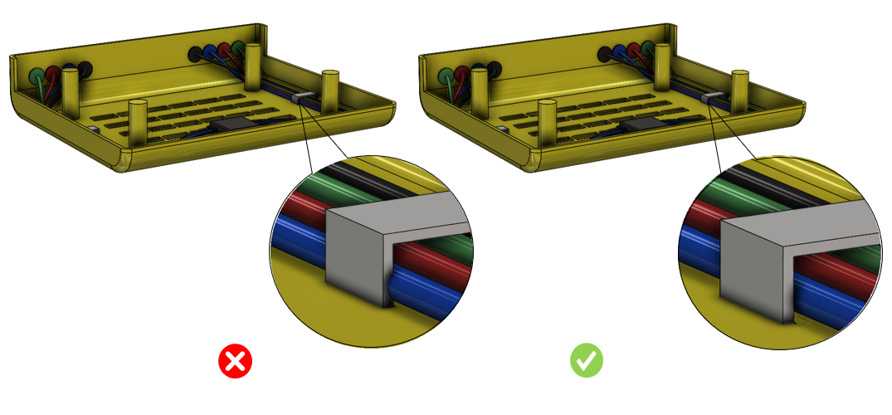
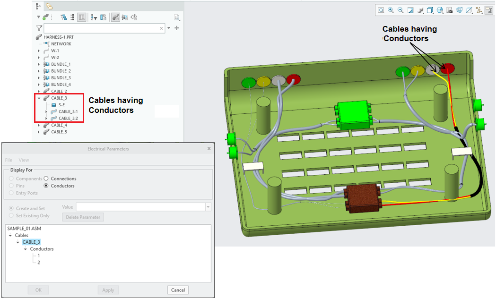
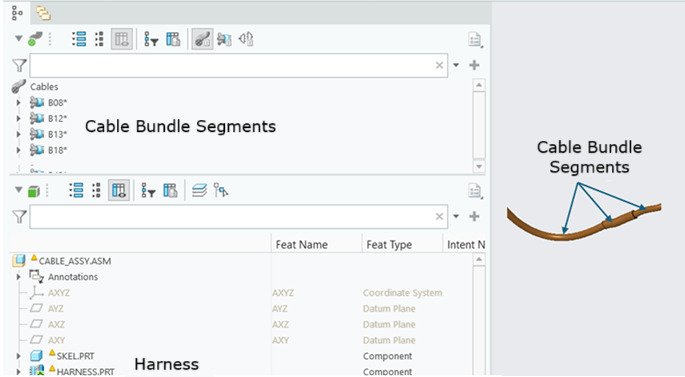

このルールは、ケーブルと他のコンポーネント間の干渉を特定します。
ケーブル配索（ワイヤハーネス）設計では、ケーブルと他のコンポーネントとの干渉を避けることが推奨されます。鋭利なエッジを持つコンポーネントがある場合は、十分なクリアランスを確保する必要があります。干渉はケーブルの切断問題につながり、重大な問題を引き起こす可能性があります。
一般的な設計ガイドラインでは、ケーブルの干渉を避けることが推奨されます。
ルール構成では、ルールのユーザーインターフェースでケーブルバンドルを構成するためのオプションが用意されています。ルールは、構成されたバンドルに対してのみ実行されます。
ユーザーは、DFMPro Settings からケーブルおよびケーブルバンドルの識別設定を行うことができます。
入力 |
解釈 |
Cable |
属性値には、（スペース、-、_）を含めずに、名前 "cable" のみを含める必要があります。 |
*Cable* |
属性値の名前に "cable" を含める必要があります。 |
*_Cable |
すべての属性値は "_cable" で終わる必要があります。 |

注記:
DFMPro設定ファイルにケーブル識別の詳細がない場合、ルールは次の警告を表示します:
Cable Identification is not defined in the DFMPro Settings file. ：DFMPro SettingsファイルでCable Identificationが定義されていません。
ケーブルコンポーネントは eDrawings レポートでは表示されません。
このルールは、Creo Cabling モジュールで作成されたケーブルをサポートします。
ケーブルまたはワイヤに導体がある場合、このルールはサポートされません（下図参照）。

ワイヤハーネスにおいて、ケーブルがケーブルバンドルセグメント（図に示す）で作成されている場合、ルールはバンドルセグメント全体を1本のケーブルとして扱います。
